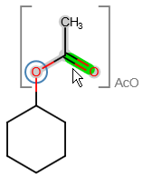

S-groups or substructure groups represent an integral part of a chemical structure. Marvin JS can handle generic S-groups and predefined abbreviated groups (superatom S-groups). Structures containing S-groups can be imported and exported either in MRV or in MDL Molfile format.
Generic S-groups usually represent whole molecules, e.g., solvents. They are visualized between brackets, which will disappear if you remove the group status from the substructure either by using the Ungroup option of the Group pop-up menu or by editing the molecule (changing/adding/deleting atoms or bonds, modifying atom properties...).
An abbreviated group can be part of a larger molecule by connecting the group to other fragments through its attachment point. Currently, only a predefined list of abbreviated groups is available in Marvin JS. Using the abbreviations of chemical functional groups and molecules enables us to create more compact structures. Alternatively, abbreviated groups can be displayed in their full, expanded forms in favor of a more detailed description of the crucial parts of the molecule.
Marvin JS offers a wide selection of abbreviated groups belonging to several chemical compound families (carbohydrates, amino acids, etc.). These structures are available under the Abbreviated Groups button of the Tools toolbar. Selecting a group in the opening dialog, you can decide whether to use the group in its contracted or expanded form. For the latter option, tick the checkbox in the dialog window. Pressing the "OK" button closes the dialog and puts the selected group on the tip of the cursor, from where you can place it on the canvas with a left-click.
An abbreviated group can be expanded, contracted, or ungrouped after it has been placed on the canvas. These options are available from the Group pop-up menu.
Expanded groups are denoted by special feedback: blue background and brackets appear around the group if the cursor is over it (the green "hover-over" feedback is still visible on the respective atom or bond), and the abbreviated name is also visible. The attachment points of the groups are circled in blue:

If an expanded group is "ungrouped", the feedback around it will disappear. The same action in case of a contracted group means that the group will be firstly expanded, and its feedback will disappear.
Contracted groups can be manipulated as atoms; while expanded abbreviated groups can be handled as molecules or fragments: they can be rotated, dragged, merged, mirrored, deleted, and cleaned in 2D.
Editing an expanded abbreviated group in any sense - i.e., changing/deleting an atom or a bond, modifying the charge or mass number of atoms - leads to the removal of the group status from the substructure.